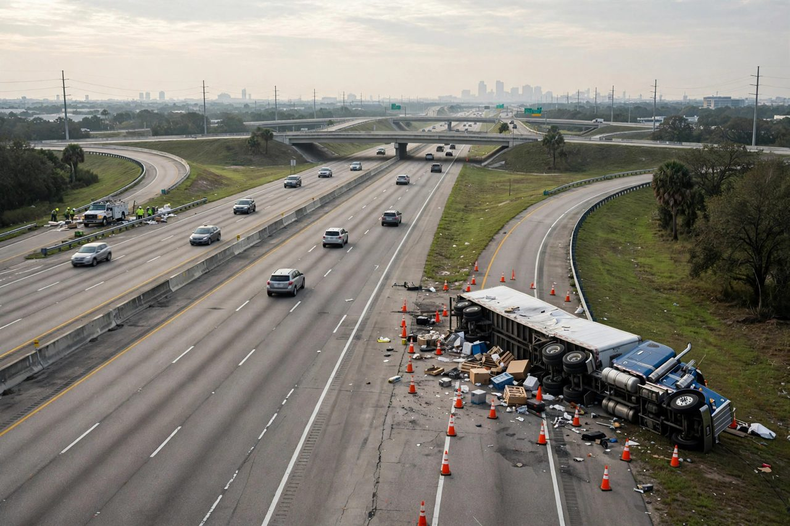

Houston, Texas: 18 पहियों वाला ट्रक पलटने और खतरनाक पदार्थ रिसाव से I-69 के पास I-10 के पश्चिम की ओर जाने वाले लेन बंद
शुक्रवार सुबह, 23 अक्टूबर को Houston में Highway 59 के पास पश्चिम की ओर जाने वाले Interstate 10 पर एक 18 पहियों वाला ट्रक पलट गया। Houston TranStar ने इस दुर्घटना को खतरनाक पदार्थ रिसाव के साथ भारी ट्रक दुर्घटना के रूप में दर्ज किया, और टीमें सड़क साफ कर रही थीं तब दायां शोल्डर, दायां लेन और मध्य लेन प्रभावित हुए।

मुख्य बिंदु
- पलटे हुए 18 पहियों वाले ट्रक ने शुक्रवार सुबह, 23 अक्टूबर को Houston के केंद्र के पास पश्चिम की ओर जाने वाले Interstate 10 के कई लेन बंद कर दिए। इस भारी ट्रक दुर्घटना में East Freeway पर खतरनाक…
- FOX 26 Houston ने बताया कि ट्रक पलटने के बाद शुक्रवार सुबह केंद्र क्षेत्र में चालकों को ट्रैफिक में देरी की उम्मीद रखनी चाहिए। KPRC 2 ने बताया कि पलटे ट्रक के कारण Interstate 69 के पास पश्चिम की…
- Houston TranStar के अनुसार, भारी ट्रक दुर्घटना और खतरनाक पदार्थ रिसाव के कारण Highway 59 के पास I-10 East के पश्चिम की ओर जाने वाले कई लेन बंद कर दिए गए, FOX 26 ने बताया। दायां शोल्डर, दायां लेन…
पलटे हुए 18 पहियों वाले ट्रक ने शुक्रवार सुबह, 23 अक्टूबर को Houston के केंद्र के पास पश्चिम की ओर जाने वाले Interstate 10 के कई लेन बंद कर दिए। इस भारी ट्रक दुर्घटना में East Freeway पर खतरनाक पदार्थ भी फैल गया।
FOX 26 Houston ने बताया कि ट्रक पलटने के बाद शुक्रवार सुबह केंद्र क्षेत्र में चालकों को ट्रैफिक में देरी की उम्मीद रखनी चाहिए। KPRC 2 ने बताया कि पलटे ट्रक के कारण Interstate 69 के पास पश्चिम की ओर जाने वाले Interstate 10 के कई लेन बंद कर दिए गए।
कौन से लेन बंद हुए
Houston TranStar के अनुसार, भारी ट्रक दुर्घटना और खतरनाक पदार्थ रिसाव के कारण Highway 59 के पास I-10 East के पश्चिम की ओर जाने वाले कई लेन बंद कर दिए गए, FOX 26 ने बताया। दायां शोल्डर, दायां लेन और मध्य लेन प्रभावित हुए।
दुर्घटना स्थल Houston के केंद्र के पूर्वी हिस्से के सबसे व्यस्त जंक्शनों में से एक पर है, जहां Interstate 10, Interstate 69 और U.S. 59, यानी Eastex Freeway, से मिलता है। उस जंक्शन पर पश्चिम की ओर जाने वाला ट्रैफिक Houston के केंद्र की ओर जाता है, इसलिए सुबह के समय सड़क के तीन हिस्सों के बंद होने का असर दुर्घटना स्थल से कहीं आगे के चालकों तक पहुंचता है।
मौके पर टीमें
शुक्रवार सुबह टीमें मौके पर सड़कों को साफ करने में मदद कर रही थीं, FOX 26 ने बताया। चैनल ने कहा कि उसकी रिपोर्ट के समय कोई और जानकारी उपलब्ध नहीं कराई गई थी।
स्थानीय टेलीविजन की पहली दो रिपोर्टों में से किसी ने भी यह नहीं बताया कि कोई घायल हुआ या नहीं। किसी रिपोर्ट ने दुर्घटना का कारण नहीं दिया, और किसी ने यह भी नहीं बताया कि कौन सा पदार्थ फैला या कितनी मात्रा सड़क तक पहुंची। KPRC 2 ने ट्रक को शुक्रवार सुबह Eastex Freeway के पास पश्चिम की ओर जाने वाले Interstate 10 पर ट्रैफिक की चिंता पैदा करने वाले पलटे हुए 18 पहियों वाले ट्रक के रूप में बताया।
शुक्रवार सुबह चालकों को क्या झेलना पड़ा
FOX 26 ने शुक्रवार सुबह Houston के केंद्र क्षेत्र में चालकों से कुछ ट्रैफिक देरी की उम्मीद रखने को कहा। बंद होने से जंक्शन पर पश्चिम की ओर जाने वाले फ्रीवे का दायां हिस्सा सेवा से बाहर हो गया, जिससे बचे हुए पश्चिम की ओर जाने वाले लेनों को सुबह का ट्रैफिक दुर्घटना और सफाई के पास से ले जाना पड़ा।
पहली स्थानीय रिपोर्टों में फिर से खुलने का कोई समय नहीं दिया गया। शुक्रवार सुबह Houston के केंद्र तक पहुंचने के लिए East Freeway का इस्तेमाल करने वाले चालक सबसे सीधे प्रभावित हुए, क्योंकि प्रभावित लेन पश्चिम की ओर वाले हैं, वह तरफ जो ट्रैफिक को शहर के केंद्र में ले जाती है।
जो अभी तक पता नहीं है
Houston TranStar ने घटना को भारी ट्रक दुर्घटना और खतरनाक पदार्थ रिसाव के रूप में दर्ज किया। यही दर्ज करना दुर्घटना का आधिकारिक ट्रैफिक रिकॉर्ड है, और यही वह स्रोत है जिसे दोनों स्थानीय चैनलों ने लेन बंद होने के लिए उद्धृत किया।
रिपोर्टों ने यह नहीं बताया कि ट्रक कैसे पलटा, कोई दूसरा वाहन शामिल था या नहीं, या दायां शोल्डर, दायां लेन और मध्य लेन कब फिर खुलेंगे। शुक्रवार सुबह पहली रिपोर्टें प्रसारित होने तक ये विवरण गायब थे, और Houston TranStar या जवाब देने वाली एजेंसियों के इन्हें जारी करते ही यह कहानी अपडेट की जाएगी।
स्रोत
FOX 26 Houston और KPRC 2 ने शुक्रवार सुबह पलटे ट्रक, लेन बंद होने और सफाई कार्य की रिपोर्ट की, दोनों ने Houston TranStar का हवाला दिया।
टाइमलाइन
- Oct 23, 2026शुक्रवार सुबह Houston में Interstate 69 और Highway 59 जंक्शन के पास पश्चिम की ओर जाने वाले Interstate 10 पर एक 18 पहियों वाला ट्रक पलट जाता है। Houston TranStar दुर्घटना को खतरनाक पदार्थ रिसाव के साथ भारी ट्रक दुर्घटना के रूप में दर्ज करता है।
- Oct 23, 2026टीमें मौके पर सड़क साफ कर रही हैं तब पश्चिम की ओर जाने वाले I-10 का दायां शोल्डर, दायां लेन और मध्य लेन प्रभावित होते हैं। पहली स्थानीय रिपोर्टों में फिर से खुलने का कोई समय नहीं दिया गया।